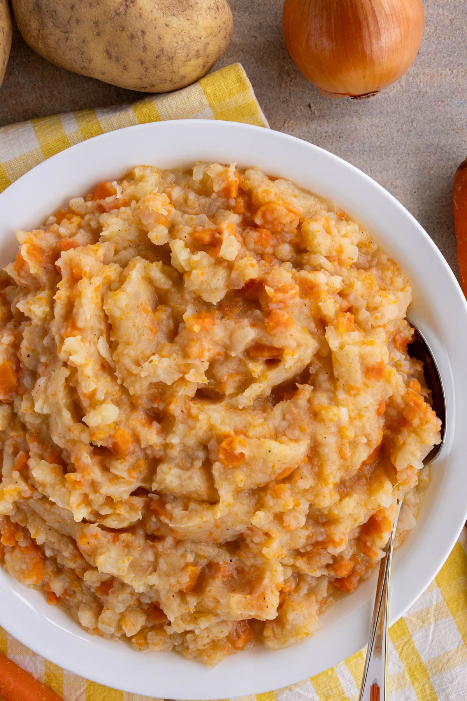

Back to Home
Hutspot

Description:
Hutspot is a traditional Dutch dish made from mashed potatoes, carrots, and onions.
Ingredients
- 1 kg potatoes, peeled and chopped
- 500 g carrots, peeled and chopped
- 500 g onions, peeled and chopped
- 200 g smoked sausage (rookworst)
- Salt and pepper to taste
- Butter (optional)
Instructions
- Boil the potatoes, carrots, and onions in a large pot of salted water until tender, about 20-25 minutes.
- While the vegetables are cooking, heat the smoked sausage according to package instructions.
- Drain the vegetables and mash them together until smooth. Add butter if desired.
- Season with salt and pepper to taste.
- Serve the mashed vegetables with slices of smoked sausage on the side.